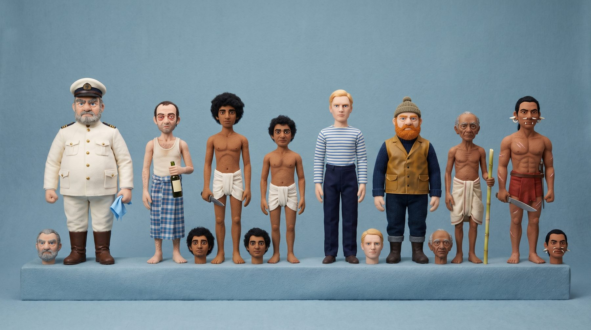
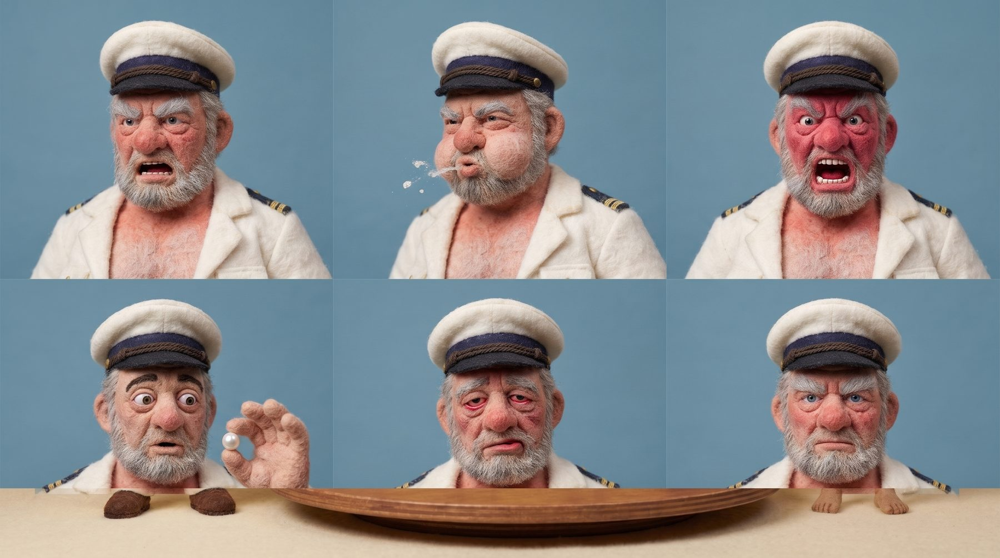
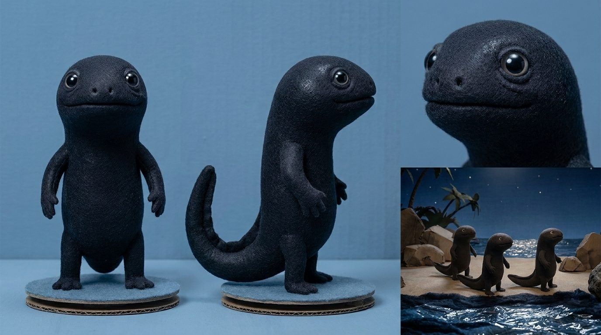
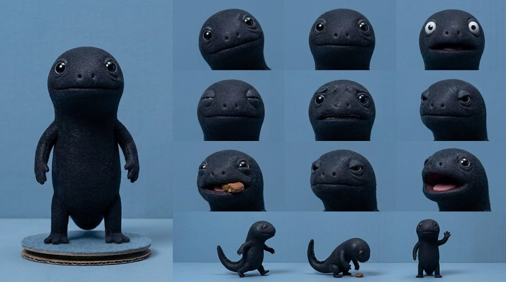

War with the Newts, Chapter 1
Reference sheets

Van Toch, the agent, the two divers, Jensen, Gudmundson, the mayor, Shark

Van Toch replacement faces

The newt (design L)

Newt expressions and poses
Character studies